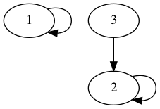
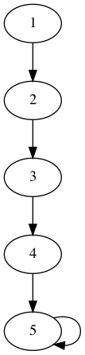

並查集與種類並查集
並查集，是一種關於集合的資料結構，支援兩種操作：
- 合併：將兩個不交集的集合合併成一個
- 查詢：判斷兩個元素是否屬於同一集合
這樣的定義或許有些抽象，我們簡單舉一個情境來說明並查集的用處。
問題描述：
有名山賊，有條線索，每條線索告訴你有兩個山賊屬於同一個山寨，問共有幾個山寨。
顯然，上述便是一個可用並查集解決的典型問題，首先將每個山賊視為一個擁有一個元素（他自己）的集合，接下來對每條線索，將兩名山賊所在的集合合併，最後剩餘集合數量即為答案。
了解並查集的用處後，自然要知道如何實作，並查集的重點在於用集合中的一個元素代表該集合，以上題為例，可以想像成每個山寨我們以山賊頭目做為代表。
為簡化問題，我們簡單粗暴的假設有五名盜賊，一開始每個集合只有自己，因此每個集合的代表（頭目）也是自己，初始化如下。
-
為山賊編號，為頭目編號
id 1 2 3 4 5 f[id] 1 2 3 4 5 -
如果第一個線索是在同一個山寨中，我們可以想像成山賊吞併了山賊的山寨，因此山賊的頭目需更新
id 1 2 3 4 5 f[id] 1 2 1 4 5 -
接著處理，或許有人會想要直接更新成，但這會使得山賊跟山賊的從屬關係消失，因此我們更新時，應擒賊先擒王的把山賊的最上層首領歸屬於山賊，才不會使關係消失
id 1 2 3 4 5 f[id] 2 2 1 4 5 -
原山賊關係

-
錯誤更新的山賊關係（關係消失）

-
擒賊先擒王得山賊關係

-
講到這已經說明了合併集合的操作，至於確定兩元素是否屬於同一集合，只需用檢查其最上層頭目是否相同，相同則為同集合，反之則否。
效率問題：路徑壓縮
每次合併與查詢時，皆需要檢查最上層頭目，若今天的關係為一條串列，則每次查詢都需要的時間，參考的下圖

若要檢查的最上層頭目，每次都要跑一次所有關係，才能找到首領，因此我們設想在檢查的同時，將圖簡化成兩層的圖型

顯然，上述兩圖的概念是相同的（大頭目皆為），但下圖將所有的查詢速度增加到了一次。
至此，並查集的觀念算是講完了，以下附上代碼實作。
-
初始化
// 一開始頭目都是自己 void init(int n) { for (int i = 1; i <= n; i++) anc[i] = i; }
-
查找大頭目
// 大頭目的頭目是自己本身，若不是，則繼續向上查找 // 找到大頭目後，將路徑上的端點頭目都改成大頭目（路徑壓縮） int findAnc(int cur) { return cur == anc[cur] ? cur : anc[cur] = findAnc(anc[cur]); }
-
合併
// 將a的大頭目的頭目設為b的大頭目 void merge(int a, int b) { anc[findAnc(a)] = findAnc(b); }
種類並查集，是一般並查集的擴展，用來維護更複雜的關係。
-
敵人的敵人是朋友
- 建構的數組
- 代表的朋友的集合
- 代表的敵人的集合
- 若為敵人，合併、
- 若為朋友，合併、
-
種類並查集有許多常見的問題，如食物鏈關係等，在此不贅述